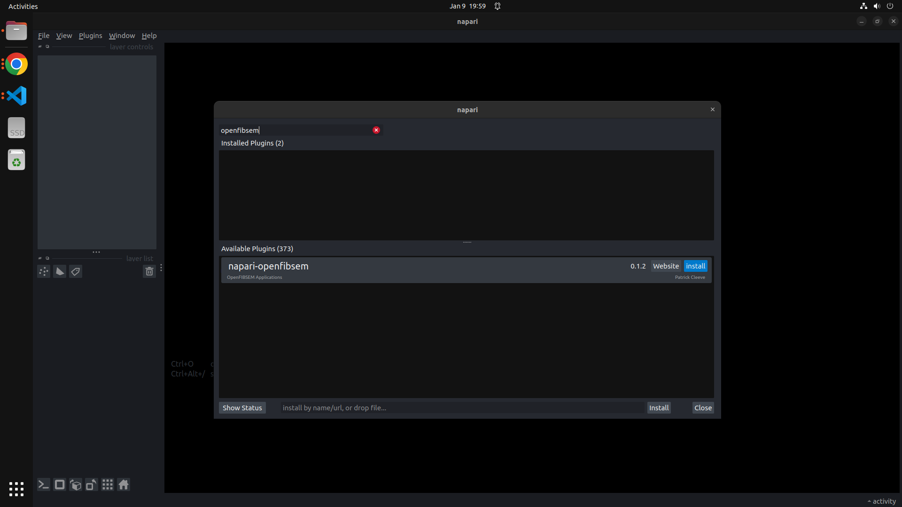

Installation Guide
Requirements
- Python 3.9+
- FIB/SEM microscope (a commercial product by ThermoFisher FEI or TESACN)
- Autoscript software (a commercial product by ThermoFisher FEI) OR
- tescanautomation software (a commercial product by TESCAN)
Python
Python 3.9 is required. The Anaconda distribution of python is recommended.
It is also highly recommended to use virtual environments for development,
see Managing Conda Environments
for more information.
(Optionally, you could use virtualenv if you prefer.)
Install
Install OpenFIBSEM
There are several ways to install OpenFIBSEM depending on your application and needs. These will also install required dependencies.
PyPI (For Users)
Github (For Development)
Clone this repository, and checkout main:
Install dependencies and package
Napari Plugin
The OpenFIBSEM tools and user interface are also available as a napari plugin:
Or use napari plugin manager
 Napari Plugin Manager
Testing your installation
You can test your installation by running the following script:
This will tell you the status of the openfibsem API, applications and installed hardware APIs.
Installing Microscope Hardware APIs
Installing Autoscript
Autoscript provides an API (application programming interface) for scripting control of compatible FEI microscope systems. This is a commercial product by Thermo Fisher FEI, please visit their website at https://www.thermofisher.com/au/en/home/electron-microscopy.html for information on pricing and installation.
Before you start
AutoScript is usually installed on the Support PC for ThermoFisher Instruments. OpenFIBSEM will automatically find this installation and use it, if it is installed in the standard location. If you fail to connect to the microscope, and see a message "Autoscript (ThermoFisher) not installed." these steps might help diagnose and solve the problem.
AutoScript Versions
We use Autoscript version 4.7.+. Contact ThermoFisher support to upgrade your AutoScript version.
The version numbers of the python packages Autoscript installs were:
- autoscript-core 5.12.0
- autoscript-sdb-microscope-client 4.7.0
- autoscript-sdb-microscope-client-tests 4.7.0
- autoscript-toolkit 4.7.0
- thermoscientific-logging 5.12.0
Add the autoscript python packages to your site-packages
To add the AutoScript python packages to your new conda environment, follow these three steps:
- Find the python environment that was created with your AutoScript installation.
Typically, you can expect the environment is named 'Autoscript', and its installed packages should be found at:
C:\Program Files\Python36\envs\AutoScript\Lib\site-packages\
Troubleshooting: If you're having trouble finding the location AutoScript chose to install its python packages into,
you can open the default terminal on your machine (eg: cmd for Windows) and type where python (Windows) or which python (Unix).
The result will be something like C:\Program Files\Python36\envs\AutoScript\python.exe.
Navigate to the environment location (in the example here, that's C:\Program Files\Python36\envs\AutoScript\
then change directories into Lib, and then the site-packages directory. This is where the python packages live.
- Find the conda environment location you just made called
fibsem....conda/envs/fibsem/Lib/site-packages/
Note: if you used python virtual env to create a virtual environment, the location of the fibsem/Lib/site-packages will be where the virtual environment was created. Where this document mentions the site-packages directory, it is referring to the site-packages directory of the virtual environment.
Troubleshooting: If you're having trouble finding the conda environment location for fibsem
you can open the Anaconda terminal on your machine and type where python (Windows) or which python (Unix).
The result will be something like C:\Users\yourusername\.conda\envs\fibsem\python.exe
Navigate to the environment location (in the example here, that's C:\Users\yourusername\.conda\envs\fibsem\
then change directories into Lib, and then the site-packages directory.
This is where you want to add copies of the AutoScript python packages.
-
Make a copy of the relevant AutoScript python packages into the conda environment. You will need to copy:
-
autoscript_core
- autoscript_core-5.12.0.dist-info
- autoscript_sdb_microscope_client
- autoscript_sdb_microscope_client_tests
- autoscript_sdb_microscope_client_tests-4.7.0.dist-info
- autoscript_sdb_microscope_client-4.7.0.dist-info
- autoscript_toolkit
- autoscript_toolkit-4.7.0.dist-info
- thermoscientific_logging
- thermoscientific_logging-5.12.1.dist-info
Having problems?
- Check to see if Autoscript is correctly installed and configured.
- Check to see if your python environment contains all packages listed in the requirements.txt
- Check that when you call python from the terminal, you get the python environment containing the dependencies listed above (i.e. you are not using a different python environment)
- Try cloning the repository and running the unit tests, you may want to try installing from the source code.
Installing Tescanautomation
Tescanautomation is a hardware API for controlling TESCAN microscopes. This is a commercially available product from TESCAN. The SDK is available in an .exe file format
Prerequisites
Before beginning this install, please ensure the following
- fibsem conda/virtualenv environment is installed and setup
- tescan-automation-sdk-install exe file is ready to go
Installing the SDK
Run the installer exe file. When it asks for the python interpreter, select the one that that matches your fibsem environment and proceed with the install.
The package should now be installed successfully
Common Issue with Python Interpreter
If the conda python interpreter cannot be selected from the drop down options, proceed with the install and take note of the path of installed python interpreter.
(If no python interpreter can be found in the drop down, install python 3.9+ seperately and run the installation exe again)
Once the installation has been completed, navigate to where python is installed on which the SDK has been installed.
In there, navigate to
...\python\lib\site-packages
from this folder, find and copy the following folders:
- All folders beginning with
PySide6 - All folders beginning with
shiboken - All folders beginning with
tescan
Copy these into the python folder that is set up in the conda environment
...\Anaconda3\envs\fibsem\lib\site-packages
The package should now be installed successfully
Checking Install
To check if the module has been installed properly and can be imported, run the following python code in FIBSEM:
import sys
from tescanautomation import Automation
print("Tescan Imported Successfully") if "tescanautomation" in sys.modules else print("Tescan Import was unsuccessful")
If the import or install is unsuccessful, check to see if all the packages have been copied to the right directory.